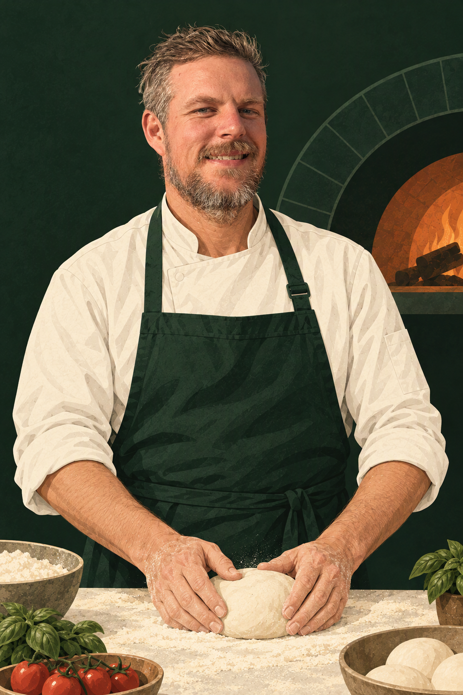

Choose the pizza, tell me when you want to eat, and I'll work backwards to the dough.
Ready when you are.
Build a dough plan and use “Start timer” on any stage.
Save today's formula, rate the result, and build your own dough book.